Alternativas no paramétricas1
![]()
¿Qué vamos a discutir hoy?
- Hemos visto hasta ahora sobre
- Estimadores puntuales,
- Intervalos de confianza, y
- Contrastes de hipótesis.
- Ahora:
- Estadística no paramétirca:
- Estimación de densidad vía histograma y kernel.
- Bootstrap.
- Estadística no paramétirca:
Motivación
Ejemplo: La exactitud de una media muestral.
Se tienen datos de sobrevivencia de 16 ratones luego de una cirugía de prueba: 9 ratones en el grupo control y 7 ratones en el grupo de tratamiento.
| Grupo | Tiempo de sobrevivencia(días) | Media |
|---|---|---|
| Tratamiento | 94,197,16,38,99,141,23 | 86.86 |
| Control | 52,104,146,10,51,30,40,27,46 | 56.22 |
¿Podemos decir que el tratamiento es efectivo?
En estadística, resolvemos esa pregunta estimando \(\bar{X}- \bar{Y} = 30.63\). El problema es cómo calcular la variabilidad, ¿podemos suponer lo mismo de siempre?
Tenemos dos opciones:
la primera utilizar el teorema del límite central (teoría asintótica).
La segunda es utilizar el estadístico:
\[T = \frac{\bar{X}- \bar{Y}}{\sqrt{\hat{ee}_{\bar{X}}^2 + \hat{ee}_{\bar{Y}}^2}}\] - ¿Cuál es el problema? En el caso asintótico, necesitamos de una muestra grande, y en el segundo caso, la distribución de \(T\) NO es conocida (podríamos usar la aproximación de Satterthwaite, pero eso sería solo una aproximación).
- La solución es usar Bootstrap
- Idea básica: https://seeing-theory.brown.edu/frequentist-inference/es.html
Estadística paramétrica y no paramétrica
Definición: La inferencia estadística es el procedimiento de producir afirmaciones probabilísticas sobre alguna (o toda) parte del modelo estadístico.
Definición: La estadística paramétrica consiste en realizar inferencia cuando el modelo estadístico puede ser representado por medio de uno o varios (finitos) parámetros desconocidos de una distribución.
Definición: dos definiciones informales de la estadística no paramétrica:
- Inferencia en modelos estadísticos que son de dimensión infinita.
- Conjunto de herramientas cuyo objetivo es realizar inferencia usando los menos supuestos posibles.
Modelos estadísticos y familias de modelos
Ejemplo:
Una empresa produce componentes eléctricos y el interés es medir la vida útil del componente (en años). Suponemos que la vida útil de los componentes sigue una distribución exponencial con parámetro \(\beta>0\).
\[f(y)= \begin{cases}\frac{1}{\beta} e^{-y/\beta}, & 0 < y < \infty, \\ 0, & y \leq 0, \end{cases}\]
Definición: Un modelo estadístico consiste en una identificación de variables aleatorias de interés, la especificación de una distribución conjunta, o una familia de posibles distribuciones conjuntas para unas variables aleatorias observables, la identificación de uno o varios parámetros de dichas distribuciones son desconocidas.
Ejemplos: Para el caso de componentes eléctricos, se tienen las variables aleatorias \(Y_1,...,Y_n\) cuya distribución conjunta es:
\[f(y_1,...,y_n|\beta)= \prod_{i=1}^n f(y_i|\beta),\]
en donde \(f(y_i)\) es la densidad de la distribución exponencial con parámetro \(\beta>0\), i.e.
\[f(y)= \begin{cases}\frac{1}{\beta} e^{-y/\beta}, & 0 < y < \infty, \\ 0, & y \leq 0. \end{cases}\]
La familia de posibles distribuciones conjuntas es \[\left\lbrace f(y_1,...,y_n|\beta), \beta >0 \right\rbrace.\]
Estadística paramétrica y no paramétrica
Ejemplos:
El ejemplo de componentes eléctricos corresponde a estadística paramétrica.
Sea \(X_1,...,X_n\) una muestra aleatoria de una población con función de distribución \(F\). Realizar inferencia sobre la función de distribución \(F(x)=P(X\leq x)\) y la función de densidad \(f(x)=F'(x)\).
- Como \(F\) y \(f\) no puede ser representada por medio de un conjunto finito de parámetros, la inferencia es no paramétrica.
Sea \((Y_1, X_1), ... ,(Y_n,X_n)\) una muestra aleatoria de dos variables aleatorias. Realizar inferencia sobre un modelo de regresión lineal \(Y_i=\beta X_i+\epsilon_i\), \(\epsilon_i \sim N(0,\sigma^2)\).
- La inferencia es paramétrica, pues el modelo estadístico puede ser representado por \(\theta=(\beta,\sigma^2)\).
Sea \((Y_1, X_1), ... ,(Y_n,X_n)\) una muestra aleatoria de dos variables aleatorias. Realizar inferencia sobre un modelo de regresión \(Y_i=f(X_i)+\epsilon_i\).
- La inferencia es no paramétrica.
Distribución empírica
- Para una muestra \(X_1, \dots, X_n\) de variables aleatorias con valores reales, independientes con distribución \(P\), definimos la distribución \(\hat{P}\) como:
\[\hat{P}(A) = \frac{1}{n}\sum_{i=1}^{n} I_A(X_i),\] para \(A \subseteq \mathbb{R}\) y \(I_A(X_i)\) es la función indicadora definida como:
\[I_A(X_i)=\left\lbrace \begin{aligned} 1 & \text{, si } X_i \in A, \\ 0 & \text{, si } X_i \notin A. \end{aligned} \right.\]
Ejemplo:
[1] 1.6393935 3.7942324 0.5696820 3.4537757 2.5820120 0.3386898 3.6935743
[8] 2.9176752 1.0788570 1.2806120[1] 0.2[1] 0.3[1] 0.2[1] 0.3Note que el conjunto \(A\) se puede definir a conveniencia.
Podría definir \(A=(0.5,3.5)\) y calcular \(\hat{P}(A)\) como:
Ejemplo:
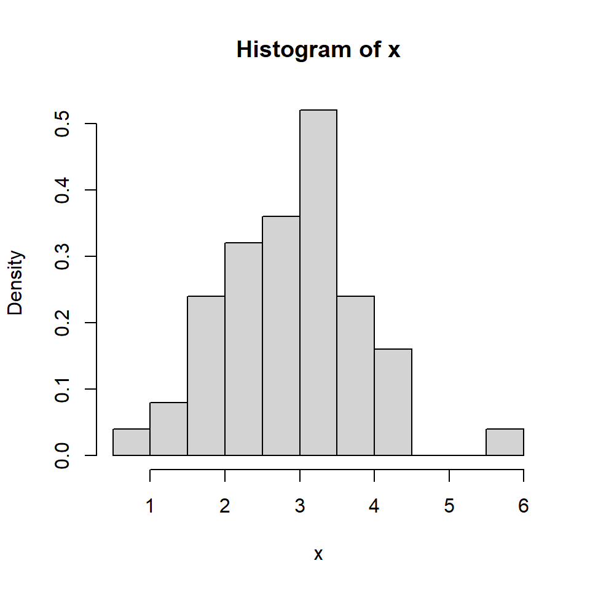\(\hat{P}\) es la distribución empírica de la muestra \(X_1,...,X_n\).
\(\hat{P}\) puede pensarse como una distribución que pone masa \(1/n\) en cada observación \(X_i\) (para valores que ocurren más de una vez la masa será un múltiplo de \(1/n\)). Entonces, \(\hat{P}\) es una distribución de probabilidad discreta con un espacio efectivo de muestreo \({X_1, \dots, X_n}\).
Resultados teóricos:
Puede demostrarse que \(\hat{P}\) es consistente para estimar \(P\).
Y además, \(\hat{P}\) es el estimador máximo verosímil no paramétrico de \(P\), lo cual justifica que podamos estimar \(P\) con \(\hat{P}\) sin tener otra información acerca de P (como por ejemplo si P pertenece a una familia paramétrica).
Sea \(A \subseteq \mathbb{R}\) (tal que \(P(A)\) está definido), entonces la consistencia significa que: \(\hat{P}(A) \xrightarrow{p} P(A)\) cuando \(n \rightarrow \infty\).
Este resultado es una consecuencia directa de La Ley de los Grandes Números, ya que:
\[n \hat{P}(A) = \sum_{i=0}^{n} I_A(X_i) \sim Bin(n, P(A))\]
por lo que \(\hat{P}(A)\) tiende a su valor esperado \(P(A)\) cuando \(n \rightarrow \infty\). Este resultado puede formalizarse mediante:
\[\sup_{A\in I}|\hat{P}(A)-P(A)| \rightarrow 0 \quad \text{cuando} \quad n \rightarrow \infty\] donde \(I\) es el conjunto de intervalos en \(\mathbb{R}\). En otras palabras, la distribución \(P(A)\) puede ser aproximada por \(\hat{P}(A)\) igual de bien para toda \(A\in I\).
Histograma
Para una muestra aleatoria \(X_1, \dots, X_n\) de una población con función de densidad desconocida \(f\).
Escoja \(x_0\) y \(h\) el ancho del segmento y calcule los límites de cada segmento: \[B_j = \left[ x_0 + (j-1)h, x_0+jh \right],~~~ j \in \mathbb{Z}.\]
Cuente cuántas observaciones caen en cada segmento \(j\), denotada por \(n_j\):
Para cada segmento \(j\), calcule la frecuencia relativa \[f_j = \frac{n_j}{nh}.\]
Grafique el histograma usando barras de altura \(f_j\) y ancho \(h\).
Ejemplo:
[1] 5.906829 15.340143- Formalmente, el histograma es dado por \[\hat{f}_h(x)=\frac{1}{nh} \sum_{i=1}^n \sum_{j} I(X_i \in B_j) I(x \in B_j),\] donde \[I(X_i \in B_j)=\left\lbrace \begin{aligned} 1 & \text{, si } X_i \in B_j, \\ 0 & \text{, si } X_i \notin B_j. \end{aligned} \right.\]
- Denote \(m_j\) por el centro de cada segmento. Esto implica que la definición del histograma asigna para cada \(x\) en el segmento \(B_j=\left[m_j-\frac{h}{2},m_j+\frac{h}{2} \right)\) la misma estimación para \(f\), \(\hat{f}_h(m_j)\).
- Note que el área del histograma es \(1\).
Ejemplo: Variando \(h\), el tamaño del segmento
[1] -10.00 -8.75 -7.50 -6.25 -5.00 -3.75 -2.50 -1.25 0.00 1.25
[11] 2.50 3.75 5.00 6.25 7.50 8.75 10.00 [1] -10.000000 -8.333333 -6.666667 -5.000000 -3.333333 -1.666667
[7] 0.000000 1.666667 3.333333 5.000000 6.666667 8.333333
[13] 10.000000[1] -10.0 -7.5 -5.0 -2.5 0.0 2.5 5.0 7.5 10.0[1] -10 -5 0 5 10Propiedades estadísticas del histograma
Si \(x_0=0\), entonces los segmentos están dados por \(B_j = \left[ (j-1)h, jh \right],~~~ j \in \mathbb{Z}\).
Suponga que queremos estimar la densidad de un \(x \in B_j\). La estimación usando el histograma para estimar \(f(x)\) es \[\hat{f}_h(x)=\frac{1}{nh} \sum_{i=1}^n \sum_{j} I(X_i \in B_j) I(x \in B_j)=\frac{1}{nh} \sum_{i=1}^n I(X_i \in B_j)\]
\(\hat{f}_h(x)\) es sesgado para estimar \(f(x)\).
Calculemos la esperanza del estimador \(\hat{f}_h(x)\). \[E\left(\hat{f}_h(x)\right)=\frac{1}{nh}\sum_{i=1}^n E\left\lbrace I(X_i \in B_j) \right\rbrace=\frac{1}{nh} n E\left\lbrace I(X_i \in B_j) \right\rbrace\]
- Note que \(I(X_i \in B_j)\) es una variable aleatoria definida como \[I(X_i \in B_j)= \begin{cases} 1, \text{ con probabilidad } \int_{(j-1)h}^{jh} f(u) du, \\ 0,\text{ con probabilidad } 1-\int_{(j-1)h}^{jh} f(u) du\end{cases}\]
- Entonces, es un ensayo de Bernoulli y su esperanza es: \[E\left\lbrace I(X_i \in B_j) \right\rbrace=\int_{(j-1)h}^{jh} f(u) du.\]
- Finalmente, tenemos que \[E\left(\hat{f}_h(x)\right)=\frac{1}{nh} n E\left\lbrace I(X_i \in B_j) \right\rbrace=\frac{1}{h} \int_{(j-1)h}^{jh} f(u) du.\]
- El sesgo es dado por \[B\left(\hat{f}_h(x)\right)=E\left(\hat{f}_h(x)\right)-f(x)= \frac{1}{h} \int_{(j-1)h}^{jh} f(u) du - f(x).\]
- Usando aproximación de Taylor de \(f(x) - f(u)\) alrededor de \(m_j=\left(j-\frac{1}{2}\right) h\) de \(B_j\), tenemos \(f(x) - f(u) \approx f'(m_j)\left[m_j-x\right]\). Por lo tanto,
\[B\left(\hat{f}_h(x)\right)=\frac{1}{h} \int_{(j-1)h}^{jh} f(u) du - f(x)= \frac{1}{h} \int_{(j-1)h}^{jh} f(u) - f(x)du \approx f'(m_j)\left[m_j-x\right].\] Observaciones:
- El sesgo es casi cero cuando \(x=m_j\), o sea en el punto medio de \(B_j\).
- El sesgo depende de la pendiente de \(f\).
- La variancia del estimador \(\hat{f}_h(x)\): \[Var\left(\hat{f}_h(x)\right)=Var \left\lbrace \frac{1}{nh}\sum_{i=1}^n I(X_i \in B_j) \right\rbrace =\frac{1}{n^2h^2} Var \left\lbrace \sum_{i=1}^n I(X_i \in B_j) \right\rbrace\] \[=\frac{1}{n^2h^2} \left[\int_{(j-1)h}^{jh} f(u) du\right] \left[1-\int_{(j-1)h}^{jh} f(u) du\right] \] Se puede mostrar que: \[Var\left(\hat{f}_h(x)\right) \approx \frac{1}{nh}f(x)\]
- Note que la variancia del estimador decrece cuando \(nh\) crece, mientras que el sesgo del estimador decrece a cero si \(h\) decrece.
Recuerden que el error cuadrático medio es: \[ECM\left(\hat{f}_h(x)\right)= Var\left(\hat{f}_h(x)\right)+\left[B\left(\hat{f}_h(x)\right)\right]^2.\]
Para poder minimizar \(ECM\left(\hat{f}_h(x)\right)\) se debe encontrar un equilibrio de \(h\), pero esto sirve solamente para un \(x\) dado.
Existe el error cuadrático medio integrado (ECMI) definido como \[ECMI\left(\hat{f}_h(x)\right)=E\left\lbrace\int_{-\infty}^{\infty} \left[\hat{f}_h(x) - f(x) \right]^2 dx\right\rbrace\] \[=\int_{-\infty}^{\infty} E\left[\left(\hat{f}_h(x) - f(x) \right)^2 \right] dx=\int_{-\infty}^{\infty} ECM\left(\hat{f}_h(x)\right) dx.\]
Se puede comprobar que el óptimo ancho del segmento es: \[h_{opt} \sim n^{-1/3}.\]
Estimación de densidad Kernel
Idea básica del histograma para estimar \(f(x)\) es: \[\hat{f}_h(x) = \frac{\#\left\lbrace \text{observaciones que caen dentro del intervalo que contiene a }x \right\rbrace}{n \cdot (\text{ancho del intervalo})},\] donde el intervalo \(B_i\) está centrado en \(m_j\).
La idea de la estimación de densidad por kernel es ligeramente diferente:
\[\hat{f}_k(x) = \frac{\#\left\lbrace \text{observaciones que caen dentro del intervalo que está alrededor de }x \right\rbrace}{n \cdot (\text{ancho del intervalo})}.\]
- Esto se puede reescribir como: \[\hat{f}_k(x) = \frac{1}{n \cdot 2h} \#\left\lbrace X_i \in [x-h,x+h)] \right\rbrace\]
- Si definimos la función kernel uniforme:
\[K(u)=\frac{1}{2} I(|u|\leq 1),\] donde \(u=(x-X_i)/h\).
- Podemos escribir ese estimador como:
\[\begin{align} \hat{f}_k(x) &= \frac{1}{nh} \sum_{i=1}^n K\left( \frac{x-X_i}{h} \right) \\ &=\frac{1}{nh} \sum_{i=1}^n \frac{1}{2} I\left(\left|\frac{x-X_i}{h}\right|\leq 1\right). \end{align}\]
- ¿Qué hace la función kernel uniforme?
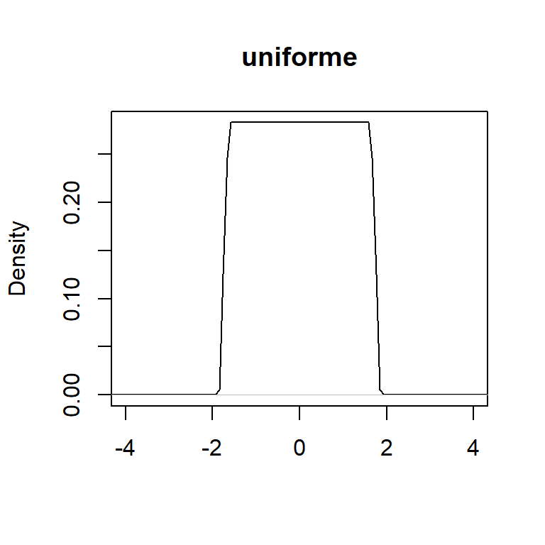
Ejemplo: Para una muestra de una población con distribución desconocida: \((1,3,3.3,7,6.5,9)\).
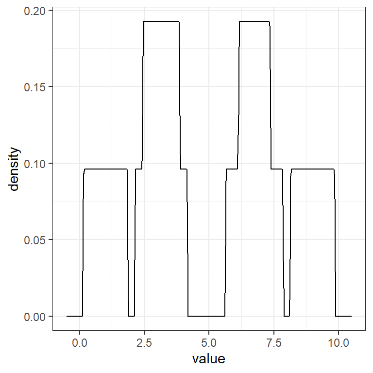
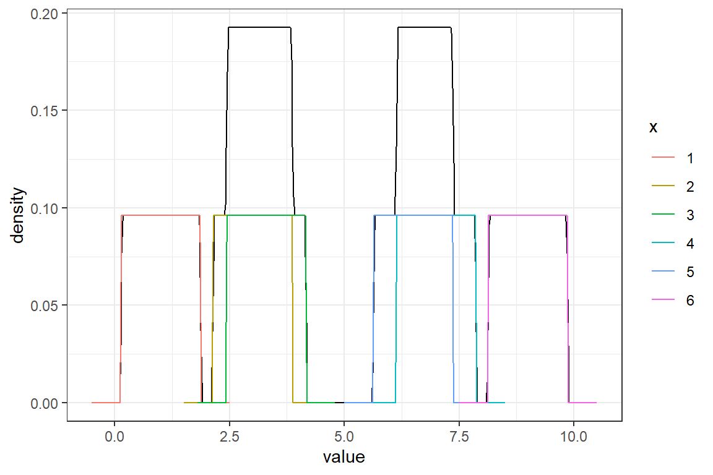
Diferentes kernels
Existe una variedad de funciones de kernels.
- Uniforme: \(K(u)=\frac{1}{2} I(|u|\leq 1),\)
- Triangular: \(K(u)= (1-|u|) I(|u|\leq 1),\)
- Gaussiano: \(K(u)=\frac{1}{\sqrt{2\pi}} e^{-\frac{1}{2}u^2}\)
Y otras como Epanechnikov, cudrática (biweight), triweight, coseno, etc.
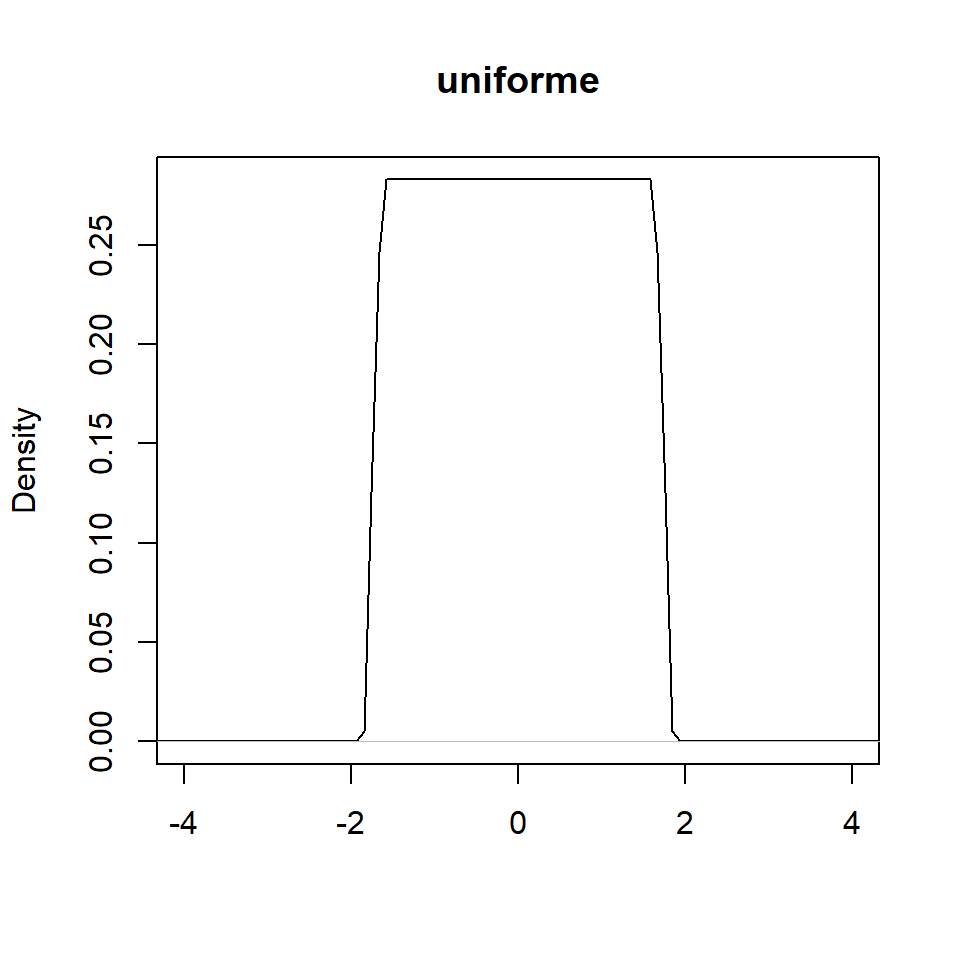
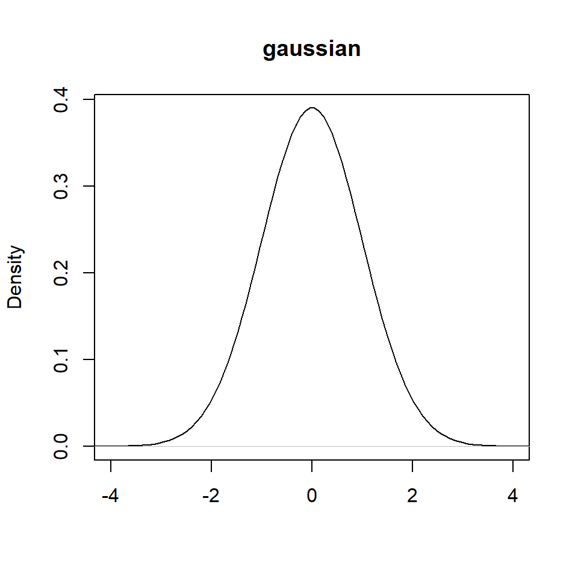
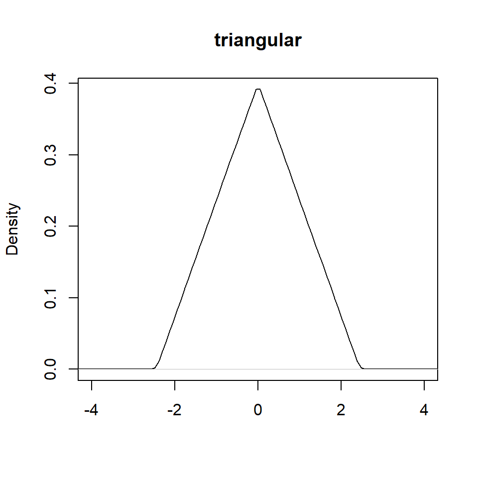
Ejemplo: Para una muestra de una población con distribución desconocida: \((1,3,3.3,7,6.5,9)\), estime la densidad usando el kernel gaussiano y \(h=0.5\).
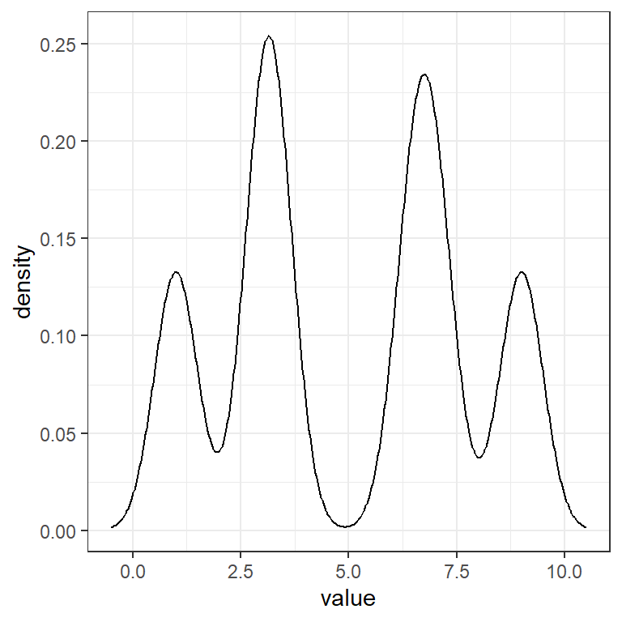
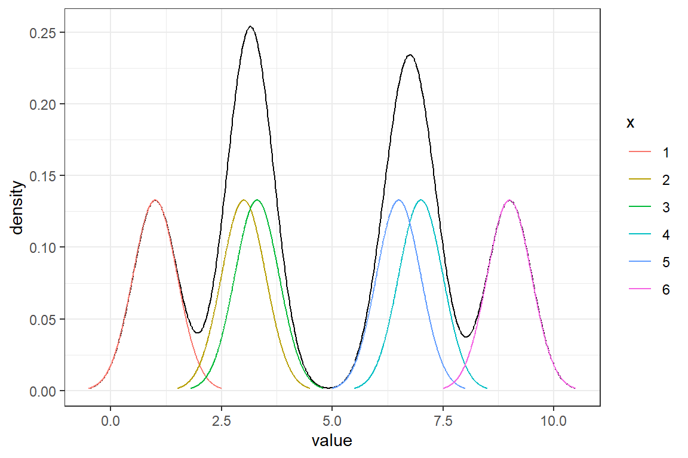
Ejemplo: Para una muestra de una población con distribución desconocida: \((1,3,3.3,7,6.5,9)\), estime la densidad usando el kernel triangular y \(h=0.5\).
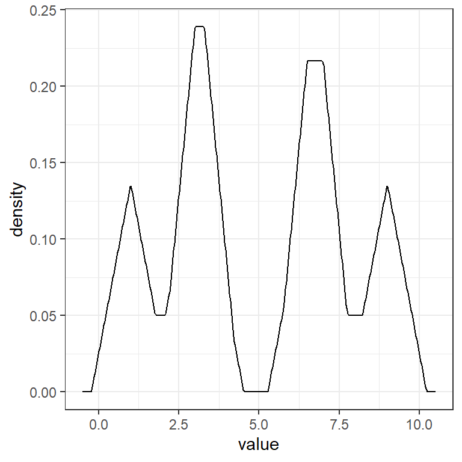
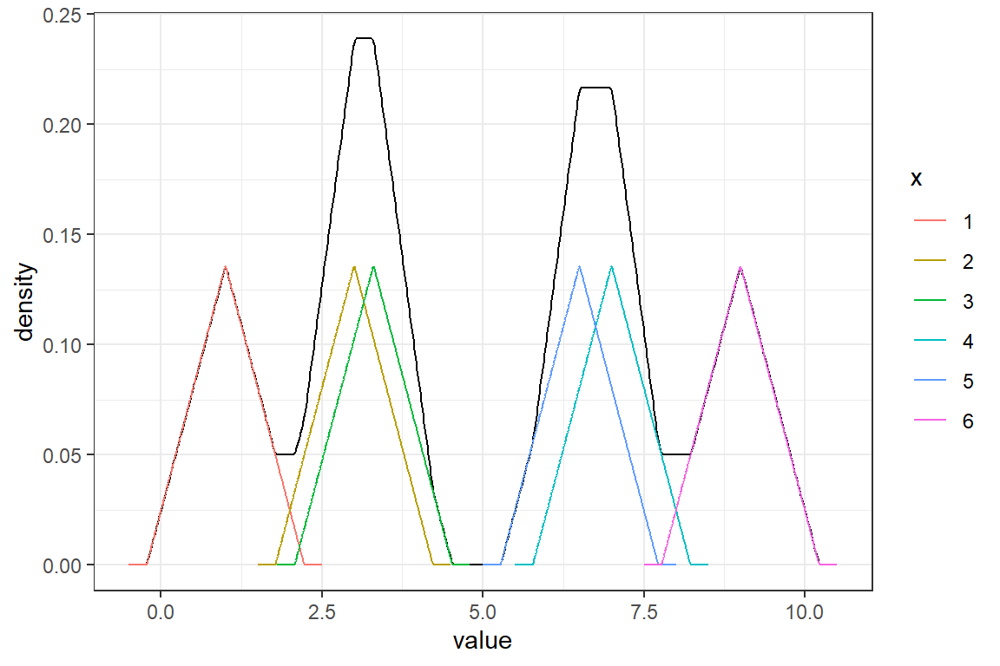
Variando \(h\)
- Con \(h=0.5,1,1.5,2\), lo que hace es suavizar más o menos la densidad estimada.
En R
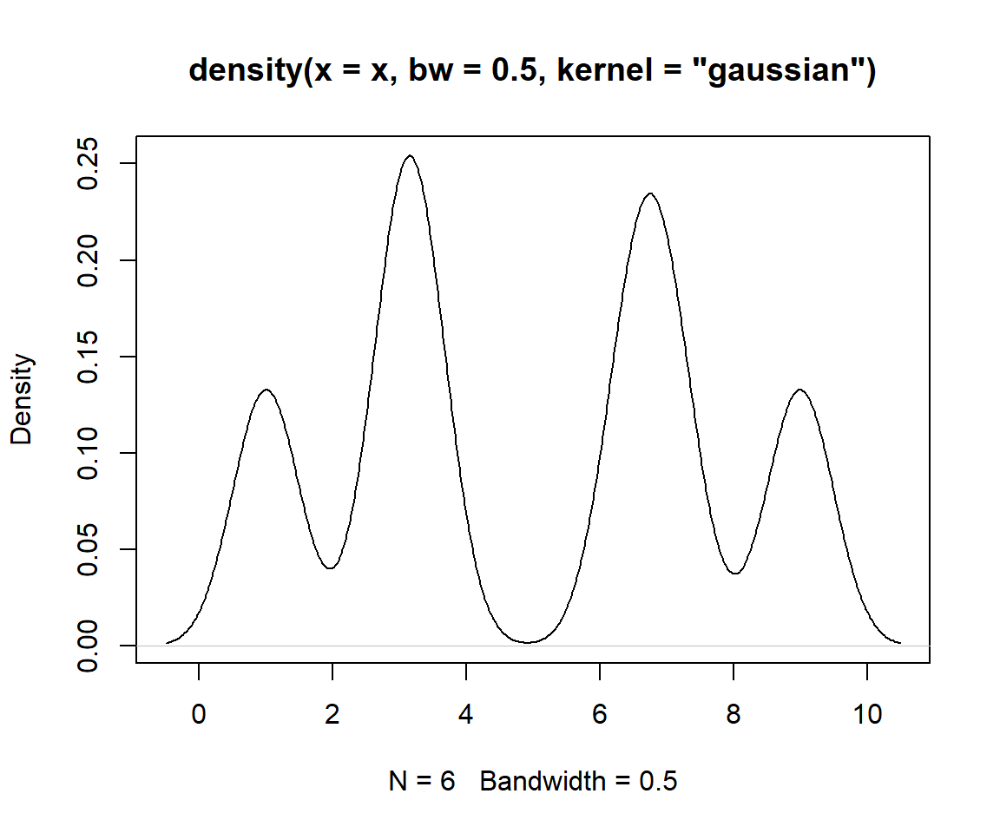Propiedades estadísticas del estimador de densidad basado en kernels
Se puede comprobar que el estimador \(\hat{f}_k(x)\) es sesgado para estimar \(f(x)\).
No entraremos en detalles sobre los cálculos del sesgo, variancia y el ECM y ECMI.
Se puede comprobar que el óptimo ancho del segmento es: \[h_{opt} \sim n^{-1/5}.\]
Ejemplo con la distribución Poisson
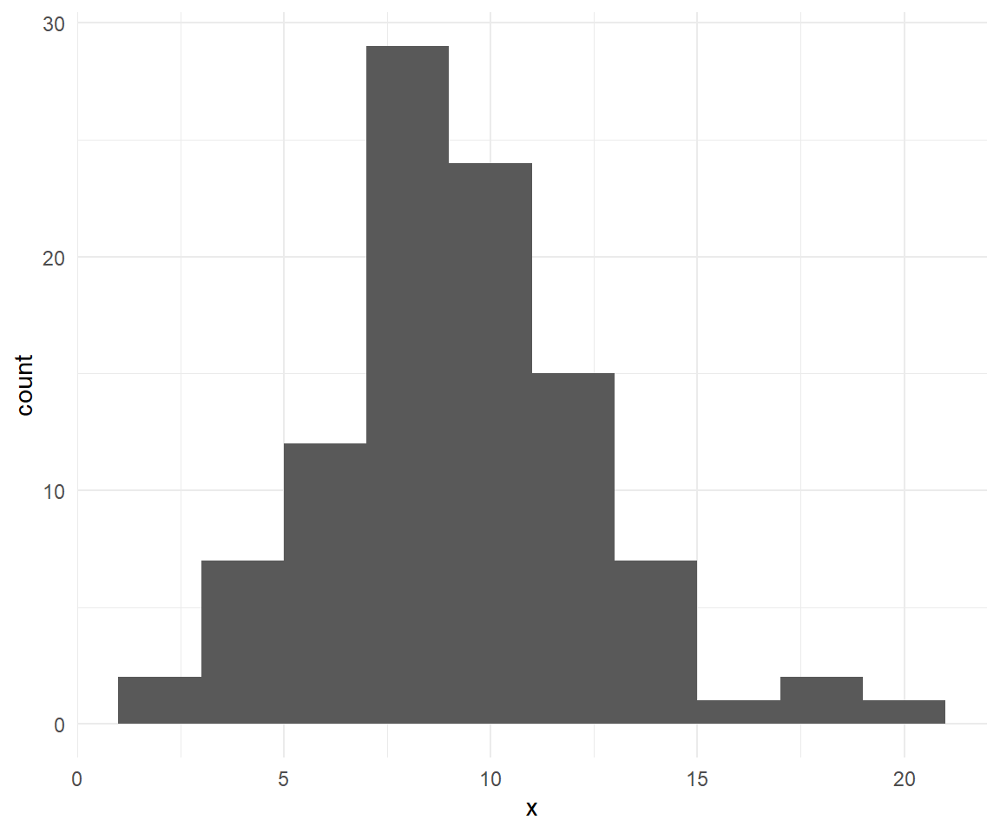¿Qué discutimos hoy?
- Histograma
- Estimación de densidad por kernels.